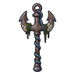
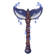
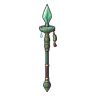

ทะเลสาบหมอกเงา
ดูบนแผนที่และวิธีไป วางแผนฟาร์ม
ทุ่งในที่ราบสูง · Lv 78–87
ชั้นล่าง / ดันเจี้ยน
เดินต่อไป
มอนในแมพ (5)
| มอน | Lv | ในแมพ | ธาตุ | โซน |
|---|---|---|---|---|
| 78–88 | ≈46 | น้ำ | ฝั่งเหนือหมอกหนา | |
| 82–90 | ≈35 | มืด | ฝั่งเหนือหมอกหนา | |
| 82–90 | ≈21 | น้ำ | ฝั่งเหนือหมอกหนา | |
| 78–83 | ≈18 | มืด | ||
| 90–90 | 1 | น้ำ |
≈ จำนวนที่อยู่ในแมพพร้อมกันโดยเฉลี่ย คิดจากไฟล์เกม (จุดเกิดของแมพ × 4 แบ่งตามสัดส่วนของแต่ละตัว) ตายแล้วเกิดใหม่ที่เดิมใน 22 วินาที · ตอนเล่นออนไลน์เซิร์ฟเวอร์เป็นคนเกิดมอน อาจไม่ตรง
อุปกรณ์ที่ดรอปในแมพนี้
| ของ | โอกาสสูงสุด |
|---|---|
| 0.5% | |
| 0.25% | |
| 0.25% | |
| 0.25% | |
| 0.25% | |
| 0.25% | |
| ชุดหนังปีกค้างคาว | 0.15% |
| 0.12% | |
 ขวานยักษ์สมอเรือ | 0.12% |
 ขวานยักษ์หางวาฬ | 0.12% |
| 0.12% | |
 หอกยาวจานน้ำกัปปะ | 0.12% |
| 0.12% | |
| 0.12% | |
| 0.12% |